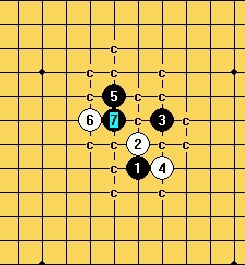

第八轮【14】炫飞1队 vs【10】棋心愉悦-二队【4台】飞飞（胜）vs冰雪笑醉
#1 <font color="red">第八轮【14】炫飞1队 vs【10】棋心愉悦-二队【4台】飞飞（胜）vs冰雪笑醉</font>作者：有志青年 发表时间：2012-6-23 16:13:18
1. 比赛采用山口规则开局，执行5手N打，其他同《中国五子棋竞赛规则》
2. 比赛行棋
（1） 所有选手需用25天内完成该阶段的5盘对局。
（2） 每手棋的行棋时限为5天，不可以延迟行棋，如违反导致超时未行棋则判负。
（3） 每个选手有一次悔棋的机会，选手可在发谱后5分钟内发送正确的棋谱。但，是否被采纳由对方决定。
（4） 如选手认为后面的变化已经穷尽（即地毯）则可以发送相关棋谱。
3.比赛办法
比赛为团体赛，采用分台定人制进行，每队4人，开赛前需确定选手台次。
比赛采用单循环赛制，同台次选手间进行比赛，先手方代表队1、3台黑棋，2、4台白棋。
比赛分3个阶段进行，每个阶段进行5轮，各阶段开始时间提前通知。
名次区分：首先比较总局分，总局分高者名次列前，如相同，则依次比较场分、伯格制、1-4台得分来区分名次。
更多内容见：爱五子棋网第一届山口规则论坛团体战竞赛规则
正式比赛26日开始，可提前开始，一旦双方均进入比赛则执行规定的时间要求。
［此帖子已被 失落刀 在 2012-7-27 7:11:27 编辑过］
#2 Re:第八轮【14】炫飞1队 vs【10】棋心愉悦-二队【4台】飞飞vs冰雪笑醉作者：飞飞 发表时间：2012-6-27 9:16:57
7打
#3 Re:第八轮【14】炫飞1队 vs【10】棋心愉悦-二队【4台】飞飞vs冰雪笑醉作者：冰雪笑醉 发表时间：2012-6-27 15:18:40
交换#4 Re:第八轮【14】炫飞1队 vs【10】棋心愉悦-二队【4台】飞飞vs冰雪笑醉作者：飞飞 发表时间：2012-6-27 17:45:49
#5 Re:第八轮【14】炫飞1队 vs【10】棋心愉悦-二队【4台】飞飞vs冰雪笑醉作者：冰雪笑醉 发表时间：2012-6-27 23:09:34
#6 Re:第八轮【14】炫飞1队 vs【10】棋心愉悦-二队【4台】飞飞vs冰雪笑醉作者：飞飞 发表时间：2012-6-28 10:16:20
#7 Re:第八轮【14】炫飞1队 vs【10】棋心愉悦-二队【4台】飞飞vs冰雪笑醉作者：冰雪笑醉 发表时间：2012-6-28 12:50:22
#8 Re:第八轮【14】炫飞1队 vs【10】棋心愉悦-二队【4台】飞飞vs冰雪笑醉作者：飞飞 发表时间：2012-6-29 10:24:36
#9 Re:第八轮【14】炫飞1队 vs【10】棋心愉悦-二队【4台】飞飞vs冰雪笑醉作者：冰雪笑醉 发表时间：2012-6-29 10:49:21
#10 Re:第八轮【14】炫飞1队 vs【10】棋心愉悦-二队【4台】飞飞vs冰雪笑醉作者：飞飞 发表时间：2012-6-29 11:43:45
#11 Re:第八轮【14】炫飞1队 vs【10】棋心愉悦-二队【4台】飞飞vs冰雪笑醉作者：冰雪笑醉 发表时间：2012-6-30 11:47:47
#12 Re:第八轮【14】炫飞1队 vs【10】棋心愉悦-二队【4台】飞飞vs冰雪笑醉作者：飞飞 发表时间：2012-6-30 18:37:54
#13 Re:第八轮【14】炫飞1队 vs【10】棋心愉悦-二队【4台】飞飞vs冰雪笑醉作者：冰雪笑醉 发表时间：2012-7-1 12:19:01
#14 Re:第八轮【14】炫飞1队 vs【10】棋心愉悦-二队【4台】飞飞vs冰雪笑醉作者：飞飞 发表时间：2012-7-1 13:57:39
#15 Re:第八轮【14】炫飞1队 vs【10】棋心愉悦-二队【4台】飞飞vs冰雪笑醉作者：冰雪笑醉 发表时间：2012-7-1 23:11:58
#16 Re:第八轮【14】炫飞1队 vs【10】棋心愉悦-二队【4台】飞飞vs冰雪笑醉作者：飞飞 发表时间：2012-7-2 11:52:57
#17 Re:第八轮【14】炫飞1队 vs【10】棋心愉悦-二队【4台】飞飞vs冰雪笑醉作者：冰雪笑醉 发表时间：2012-7-2 21:59:15
#18 Re:第八轮【14】炫飞1队 vs【10】棋心愉悦-二队【4台】飞飞vs冰雪笑醉作者：飞飞 发表时间：2012-7-3 9:27:52
#19 Re:第八轮【14】炫飞1队 vs【10】棋心愉悦-二队【4台】飞飞vs冰雪笑醉作者：冰雪笑醉 发表时间：2012-7-3 19:23:19
#20 Re:第八轮【14】炫飞1队 vs【10】棋心愉悦-二队【4台】飞飞vs冰雪笑醉作者：飞飞 发表时间：2012-7-6 14:49:15
#21 Re:第八轮【14】炫飞1队 vs【10】棋心愉悦-二队【4台】飞飞vs冰雪笑醉作者：冰雪笑醉 发表时间：2012-7-6 20:39:29
#22 Re:第八轮【14】炫飞1队 vs【10】棋心愉悦-二队【4台】飞飞vs冰雪笑醉作者：飞飞 发表时间：2012-7-7 9:24:44
#23 Re:第八轮【14】炫飞1队 vs【10】棋心愉悦-二队【4台】飞飞vs冰雪笑醉作者：冰雪笑醉 发表时间：2012-7-7 15:29:14
#24 Re:第八轮【14】炫飞1队 vs【10】棋心愉悦-二队【4台】飞飞vs冰雪笑醉作者：飞飞 发表时间：2012-7-8 7:39:08
#25 Re:第八轮【14】炫飞1队 vs【10】棋心愉悦-二队【4台】飞飞vs冰雪笑醉作者：冰雪笑醉 发表时间：2012-7-9 0:15:53
#26 Re:第八轮【14】炫飞1队 vs【10】棋心愉悦-二队【4台】飞飞vs冰雪笑醉作者：飞飞 发表时间：2012-7-9 8:04:39
#27 Re:第八轮【14】炫飞1队 vs【10】棋心愉悦-二队【4台】飞飞vs冰雪笑醉作者：冰雪笑醉 发表时间：2012-7-10 20:33:36
#28 Re:第八轮【14】炫飞1队 vs【10】棋心愉悦-二队【4台】飞飞vs冰雪笑醉作者：飞飞 发表时间：2012-7-11 16:02:35
#29 Re:第八轮【14】炫飞1队 vs【10】棋心愉悦-二队【4台】飞飞vs冰雪笑醉作者：冰雪笑醉 发表时间：2012-7-11 17:40:59
#30 Re:第八轮【14】炫飞1队 vs【10】棋心愉悦-二队【4台】飞飞vs冰雪笑醉作者：飞飞 发表时间：2012-7-11 20:13:33
#31 Re:第八轮【14】炫飞1队 vs【10】棋心愉悦-二队【4台】飞飞vs冰雪笑醉作者：冰雪笑醉 发表时间：2012-7-12 0:23:52
#32 Re:第八轮【14】炫飞1队 vs【10】棋心愉悦-二队【4台】飞飞vs冰雪笑醉作者：飞飞 发表时间：2012-7-12 17:01:34
#33 Re:第八轮【14】炫飞1队 vs【10】棋心愉悦-二队【4台】飞飞vs冰雪笑醉作者：冰雪笑醉 发表时间：2012-7-16 19:32:50
#34 Re:第八轮【14】炫飞1队 vs【10】棋心愉悦-二队【4台】飞飞vs冰雪笑醉作者：飞飞 发表时间：2012-7-17 10:20:15
#35 Re:第八轮【14】炫飞1队 vs【10】棋心愉悦-二队【4台】飞飞vs冰雪笑醉作者：冰雪笑醉 发表时间：2012-7-17 21:48:48

#36 Re:第八轮【14】炫飞1队 vs【10】棋心愉悦-二队【4台】飞飞vs冰雪笑醉作者：飞飞 发表时间：2012-7-18 7:23:52
肿么啦，你投不投？节约时间哇，不过要继续我也乐意。#37 Re:第八轮【14】炫飞1队 vs【10】棋心愉悦-二队【4台】飞飞vs冰雪笑醉作者：冰雪笑醉 发表时间：2012-7-18 22:12:38
飞飞你软件出问题了吧，我地毯了

#38 Re:冰雪笑醉【==Re:第八轮【14】炫飞1队 vs【10】棋心愉悦-二队【4台】飞飞vs冰雪笑醉==】作者：忧郁的双眼 发表时间：2012-7-18 23:19:38
#39 Re:第八轮【14】炫飞1队 vs【10】棋心愉悦-二队【4台】飞飞vs冰雪笑醉作者：飞飞 发表时间：2012-7-19 18:05:04
那你走一下吧。#40 Re:第八轮【14】炫飞1队 vs【10】棋心愉悦-二队【4台】飞飞vs冰雪笑醉作者：冰雪笑醉 发表时间：2012-7-21 11:45:02
开玩笑呢。我投啦